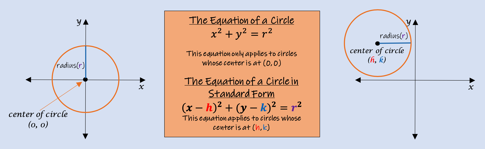
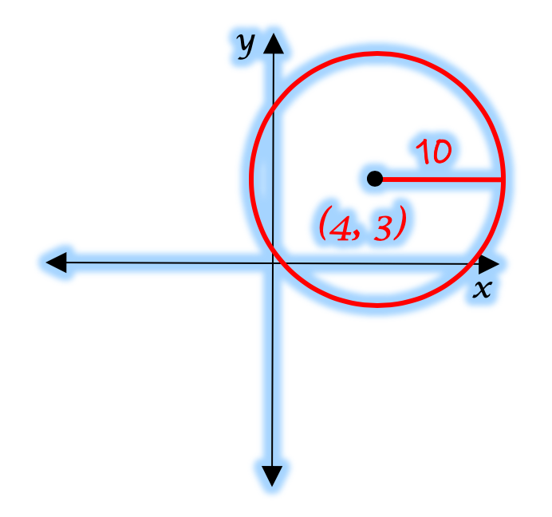
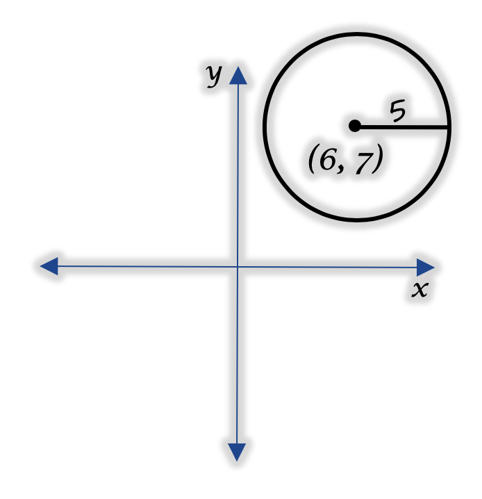
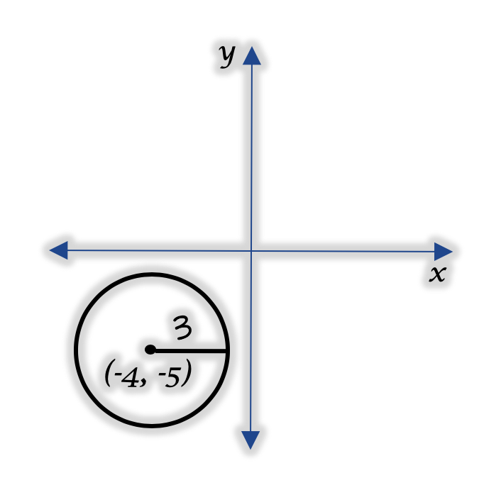

The Equation of a Circle centered at the origin (0, 0)
and the Equation of a Circle whose center is not at the origin are
very similar equations.
When there has been a shift and the center of
circle is no longer positioned at (0, 0), then the Standard Form of the
Equation of a circle must be used.
If the circle's center is at (0, 0)
the first equation should be used for ease of calculation.

The formula for the Equation of a Circle is the same each time,
just like the slope-intercept equation, y = mx + b.
For the circle's equation,
the goal is to substitute the values of each variable into the formula.
After substituting for the center's coordinates (h, k) on the left side of the equation,
you do not touch the left-side of the equation anymore; you have your answer
just by substituting.
It is important to understand that the coordinates of
the center of the circle (h, k) is just an ordered pair of the form (x, y). The problem is
we can't use variables (x, y) to represent the location of the center of the circle, because
those variables have already been used in the formulas for the equation of a circle.
Therefore, different variables were chosen to represent the coordinates of the circle's center.
Therefore, for a circle's center, the general format of an ordered pair (x, y) becomes (x, y) = (h, k);
where x = h, and y = k.
When substituting in the length of the circle's radius for variable r on the right-hand side of the equation,
you will need to calculate the numerical value of r2. The right-hand side of the
equation's answer is represented as numerical value, not r2. If you substitute the radius,
but don't simplify its value, your answer will be wrong.
(*Careful! Recall: r2 = (radius)x(radius), NOT (2)x(radius))
Let's look at a few examples of circles and their corresponding equations:
Example #1:
The circle shown in the image has a radius of 5 units
and its center(h, k) is at (0, 0).
Therefore, r = 5, h = 0, and k = 0.
The Standard Form for the Equation of a Circle is:
(x - h)2 + (y - k)2 = r2
Step 1: Substitute h, k, and r into the equation:
(x - 0)2 + (y - 0)2 = 52
Step 2: Simplify inside of the parentheses and also calculate the radius squared:
x2 + y2 = 25
The Answer is:
x2 + y2 = 25
Example #2:

The circle shown in the image has a radius of 10 units
and its center(h, k) is at (4, 3).
Therefore, r = 10, h = 4, and k = 3.
The Standard Form for the Equation of a Circle is:
(x - h)2 + (y - k)2 = r2
Step 1: Substitute h, k, and r into the equation:
(x - 4)2 + (y - 3)2 = 102
Step 2: Simplify inside of the parentheses and also calculate the radius squared:
(x - 4)2 + (y - 3)2 = 100
The Answer is:
(x - 4)2 + (y - 3)2 = 100
Below are some example problems for you to try. Calculate your answer on a seperate sheet of paper. When you have your solution, click the "Reveal Solution" button to see if you got it right. Good luck!

Notice when substituting in the value of h = 0, (x - h) becomes (x - 0)2.
As part of 'Step 2' and simplifying inside the parentheses, notice (x - 0) means any number (ie. variable 'x') minus zero. So (x - 0)2
becomes (x)2 which becomes x2 because the parentheses are no longer necessary. Leaving the answer unsimplified will
generate a wrong answer.
You should never answer (x - 0)2 or (y - 0)2.
Always rewrite the terms as
x2 or y2.
Notice that when an ordered pair is positive (h = 15) the subtract sign remains before and after the substitution since the number you are substituting is irrelevant to the formula having a subtract sign. Only if a coordinate is negative (k = -12) does the subtract sign matter. And as discussed above, substituting a negative number will always result in an addition sign inside the parentheses.